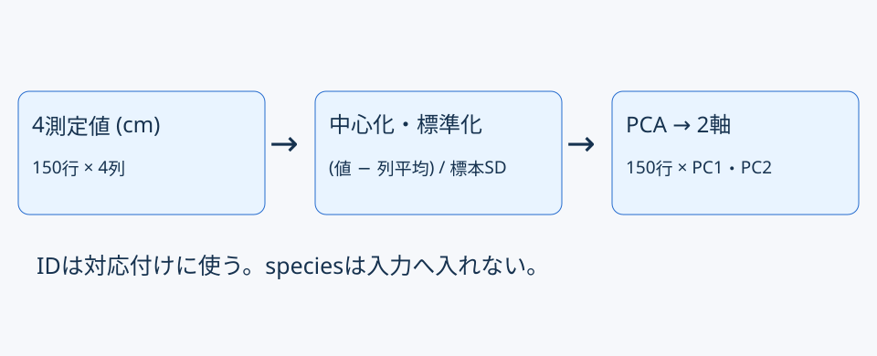
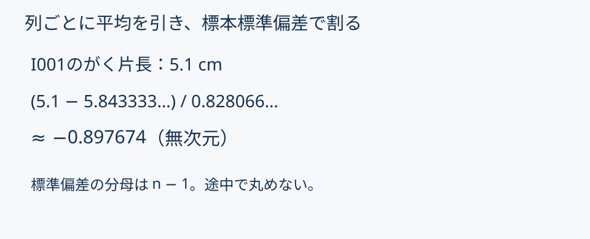
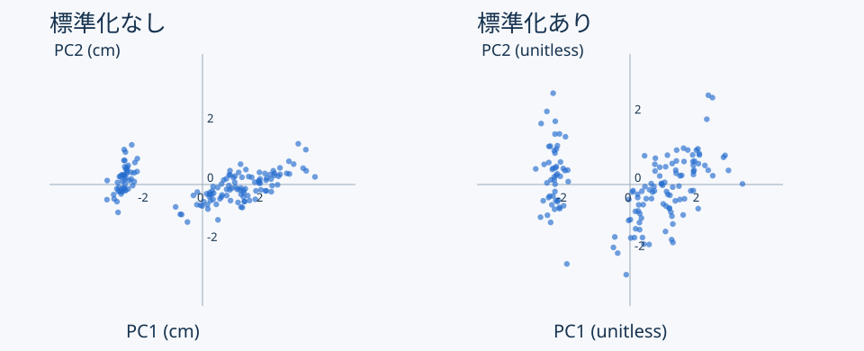
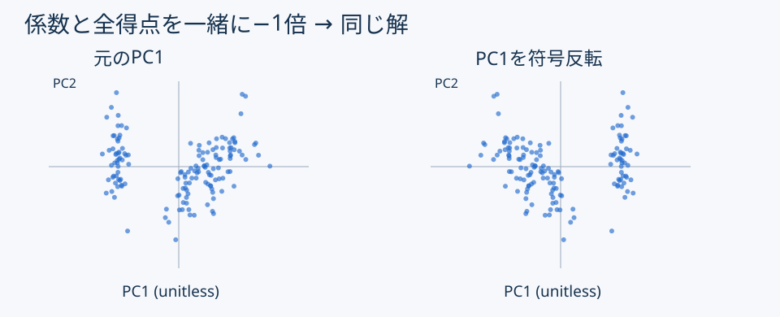

主成分分析（PCA）
予想 → 小変更 → 独立照合 → 説明
描画部分は完成済みです。
| 第12回 | 第13回 |
|---|---|
| 目的変数を予測 | ばらつきを要約 |
| 訓練・検証・最終確認 | 全150行を探索 |
| RMSEで比較 | 寄与率と配置を読む |
同じcmでも、列のばらつきは異なる。


| 出力 | 意味 | 今回の形 |
|---|---|---|
| 係数 | 4列の組み合わせ方 | 4×2 |
| 得点 | 各花の新しい座標 | 150×2 |
| 寄与率 | 全分散に占める割合 | 2値 |
lesson13.pyとlesson13.Rを実行。予想を一文残してから変更する。
| 条件 | PC1 | PC2 | 累積 |
|---|---|---|---|
| 標準化なし | .924619 | .053066 | .977685 |
| 標準化あり | .729624 | .228508 | .958132 |
約95.81%は分類の正解率ではない。

前後で「全分散」の基準が変わる。
一部の行だけの反転は別の結果。

PC1 = z₁w₁ + z₂w₂ + z₃w₃ + z₄w₄
scores.csv：ID・PC1・PC2、150行。explained_variance.csv：2条件×2成分。pca.png：各150点、条件・軸・単位。照合言語は保存不要。本文§10。
Forms：主言語・両コード全文・実行状況・振り返り